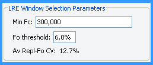

The LRE Analyzer provides two general methods for monitoring assay performance. The first is based on variance generated by optical calibrations conducted over multiple runs. In the example presented below, calibration profiles (CAL1 and CAL2) produced over 3 runs generated an average OCF CV of ±15.1%:
Average OCF CV
Although amplification of a highly purified target such as lambda gDNA would be expected to produce lower run-to-run variance than, for example, of a cDNA target, the average OCF CV does provide a general indicator of assay performance that is generally consistent with level of quantitative accuracy as assessed, e.g., using limiting dilution assays, as is discussed in the Assessing Quantitative Accuracy section .
The second method provides an assessment of intra-run variance, based on the repeatability of replicate profiles (i.e. technical replicates). This example shown below is taken from the same dataset presented above, in which six replicate calibration reactions for both CAL1 and CAL2 were conducted in each run. Averaging the CVs generated by from each replicate set across all runs is presented in the LRE Window Selection Parameters panel, referred to as the "Av Repl CV":
Replicate Calibration Profile F0 CV
(CAL1 and CAL2 X6 replicates)

While these analyses provide only a limited perspective into assay performance, in practice these have been found to be generally effective in assessing the performance of an assay.
Note also that these datasets were generated with the Applied Biosystems 7500, which has been found to generate high levels of read precision. The optical performance of other types of instruments has been found to vary significantly. See the optical precision overview for additional details.